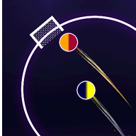

Kullanım Şartları
Bu şartlar Neon Football Simulator mobil oyununu ("oyun") ve oyunun maç videolarını sosyal medya hesaplarımızda paylaşmak için kullandığımız video aracını ("video aracı") kapsar. Oyunu indirerek ya da kullanarak bu şartları kabul etmiş olursun.
Oyunu kullanma hakkı
Oyunu kişisel ve ticari olmayan amaçla kullanman için sana kişiye özel, devredilemez ve geri alınabilir bir kullanım hakkı veriyoruz. Oyunun kodu, tasarımı, görselleri ve sesleri bize ya da lisans verenlerimize aittir.
Kurallara uygun kullanım
- Oyunu hile, otomasyon ya da oyunun kodunu değiştirerek oynama; sıralamaya gerçek olmayan skor gönderme.
- Sıralamada hakaret içeren, nefret söylemi barındıran ya da başkasını taklit eden ad kullanma. Böyle adları ve skorları kaldırabiliriz.
- Logo olarak yalnızca kullanma hakkın olan fotoğrafları ekle. Bu fotoğraflar cihazında kalır, ayrıntılar Gizlilik Politikası'nda.
Jetonlar, Pro abonelik ve satın almalar
- Jetonlar oyun içi sanal öğelerdir. Gerçek parayla bir değeri yoktur, paraya çevrilemez ve oyun dışında kullanılamaz.
- Jeton paketleri ve Pro abonelik Google Play üzerinden satılır. Ödeme, yenileme ve iade Google Play'in kurallarına tabidir.
- Pro abonelik sen Google Play'den iptal edene kadar her ay yenilenir.
Sıralama ödülleri
- Günlük ve haftalık frikik sıralamasında ilk üçe girenler, oyunda gösterilen miktarda jeton kazanır. Aynı skoru yapanlar sırayı ve ödülü paylaşır.
- Ödül, dönem bittikten sonra oyunu açtığında hesabına eklenir ve 14 gün içinde alınmazsa düşer.
- Hile, otomasyon ya da oyunun kodunu değiştirerek elde edilen skorlar ödül kazanmaz. Bu durumda skoru ve sıralama kaydını silebiliriz.
- Ödül miktarlarını ve kurallarını değiştirebilir ya da ödülleri sona erdirebiliriz.
Reklamlar
Oyun Google AdMob reklamları gösterir. Reklamlarda tanıtılan ürün ve hizmetlerden reklamı veren sorumludur.
Gerçek maçlar ve takım adları
Günün Maçları'ndaki maç listesi ve skorlar TheSportsDB'den alınır ve yalnızca bilgi amaçlıdır; doğruluğunu ya da güncelliğini garanti etmeyiz. Takım ve lig adları sahiplerine aittir. Oyun hiçbir kulüp, lig ya da federasyonla bağlantılı değildir ve onlar tarafından desteklenmez.
Video aracı ve TikTok
- Video aracı yalnızca bizim kullandığımız bir masaüstü programıdır. Oyunda oynanan maçları kaydeder ve bu videoları Neon Football Simulator'ın kendi YouTube, Instagram ve TikTok hesaplarında paylaşmamıza yardım eder. Kamuya açık değildir, başka kişilerin hesaplarına erişmez.
- TikTok hesabı yalnızca hesap sahibinin TikTok giriş ekranında verdiği izinle bağlanır. Araç yalnızca video yükleme izni ister ve videoyu TikTok gelen kutusuna taslak olarak gönderir; paylaşım TikTok uygulamasında hesap sahibi tarafından tamamlanır.
- Erişim anahtarları yalnızca aracın çalıştığı bilgisayarda saklanır, başka bir sunucuya gönderilmez. Bağlantı TikTok hesabının ayarlarından istendiği zaman kaldırılabilir.
- TikTok'ta paylaşılan içerik için TikTok'un Hizmet Şartları ve Topluluk Kuralları da geçerlidir.
Garanti ve sorumluluk
Oyun "olduğu gibi" sunulur. Oyunun kesintisiz ya da hatasız çalışacağını garanti etmeyiz. Yürürlükteki yasaların izin verdiği ölçüde, oyunun kullanımından doğan dolaylı zararlardan sorumlu değiliz. Bu şartlar, yasalardan doğan tüketici haklarını kısıtlamaz.
Hizmetin değişmesi ve sona ermesi
Oyunun özelliklerini değiştirebilir, bir özelliği kaldırabilir ya da oyunu yayından kaldırabiliriz. Bu şartları ihlal eden oyuncuların sıralama kayıtlarını silebiliriz.
Şartlardaki değişiklikler
Şartlar değişirse yeni sürüm bu sayfada yeni yürürlük tarihiyle yayımlanır. Değişiklikten sonra oyunu kullanmaya devam etmen yeni şartları kabul ettiğin anlamına gelir.
Uygulanacak hukuk
Bu şartlar Türkiye Cumhuriyeti yasalarına tabidir.
İletişim
Sorular için: emrekisik@gmail.com
Terms of Service
Neon Football Simulator · Effective November 8, 2026
These terms cover the Neon Football Simulator mobile game ("the game") and the video tool we use to share match videos from the game on our own social media accounts ("the video tool"). By downloading or using the game you agree to these terms.
Your license to use the game
We grant you a personal, non-transferable, revocable license to use the game for personal, non-commercial purposes. The game's code, design, graphics and sounds belong to us or our licensors.
Acceptable use
- Do not cheat, use automation or modify the game's code, and do not submit scores to the leaderboard that were not earned in play.
- Do not use leaderboard names that are offensive, hateful or impersonate someone else. We may remove such names and scores.
- Only add photos as logos if you have the right to use them. These photos stay on your device; see the Privacy Policy.
Tokens, Pro subscription and purchases
- Tokens are virtual in-game items. They have no real-money value, cannot be exchanged for money and cannot be used outside the game.
- Token packs and the Pro subscription are sold through Google Play. Payments, renewals and refunds follow Google Play's policies.
- The Pro subscription renews monthly until you cancel it in Google Play.
Leaderboard rewards
- Players who finish in the top three of the daily and weekly free kick leaderboards win the number of tokens shown in the game. Players with the same score share the rank and the reward.
- A reward is added to your balance when you open the game after the period ends, and it expires if it is not collected within 14 days.
- Scores achieved by cheating, automation or modifying the game's code do not earn rewards. In that case we may delete the score and the leaderboard record.
- We may change the reward amounts and rules, or end the rewards.
Advertising
The game shows ads from Google AdMob. Advertisers are responsible for the products and services shown in their ads.
Real matches and team names
The match list and scores in Today's Matches come from TheSportsDB and are for information only; we do not guarantee that they are accurate or up to date. Team and league names belong to their owners. The game is not affiliated with or endorsed by any club, league or federation.
The video tool and TikTok
- The video tool is a desktop program used only by us. It records matches played in the game and helps us share these videos on Neon Football Simulator's own YouTube, Instagram and TikTok accounts. It is not offered to the public and does not access anyone else's accounts.
- A TikTok account is connected only with the permission the account owner grants on TikTok's login screen. The tool requests only the video upload permission and sends each video to the TikTok inbox as a draft; the account owner finishes posting it in the TikTok app.
- Access tokens are stored only on the computer running the tool and are never sent to another server. The connection can be removed at any time in the TikTok account settings.
- Content posted on TikTok is also subject to TikTok's Terms of Service and Community Guidelines.
Warranty and liability
The game is provided "as is". We do not guarantee that it will run without interruptions or errors. To the extent permitted by law, we are not liable for indirect damages arising from the use of the game. These terms do not limit your statutory consumer rights.
Changes to the service and termination
We may change the game's features, remove a feature or stop offering the game. We may delete the leaderboard records of players who break these terms.
Changes to these terms
If these terms change, the new version will be posted on this page with a new effective date. Continuing to use the game after a change means you accept the new terms.
Governing law
These terms are governed by the laws of the Republic of Türkiye.
Contact
Questions: emrekisik@gmail.com